The Radeon GPU Profiler¶
The Radeon GPU Profiler is a performance tool that can be used by developers to optimize DirectX12© and Vulkan© applications for AMD GCN hardware. It is part of a suite of tools comprised of the following software:
Radeon Developer Mode Driver - This is shipped as part of the AMD public Adrenaline driver and supports the developer mode features required for profiling.
Radeon Developer Service (RDS) - A system tray application that unlocks the Developer Mode Driver features and supports communications with high level tools. A headless version is also available called RadeonDeveloperServiceCLI.
Radeon Developer Panel (RDP) - A GUI application that allows the developer to configure driver settings and generate profiler data from DirectX12 and Vulkan applications.
Radeon GPU Profiler (RGP) - A GUI tool used to visualize and analyze the profile data.
This document describes how to generate a profile using the Radeon Developer Panel and how the Radeon GPU Profiler can be used to examine the output profiles. The Radeon GPU Profiler is currently designed to work with frame based graphics applications only. It is specifically designed to address the issues that developers are dealing with in the move from traditional graphics APIs to explicit APIs. It also provides the visualization of GCN hardware specific information allowing the developer to tune their application to the full potential of the architecture. The tool provides unique visualizations of queue synchronization using fences and semaphores, asynchronous compute, and barrier timings. Currently, it supports the explicit APIs (DirectX12 and Vulkan) and will NOT work with older APIs such as DirectX11 or OpenGL.
Supported graphics APIs, GCN hardware, and operating systems¶
Supported graphics APIs
- DirectX12
- Vulkan
Supported GCN hardware
- AMD RX Vega 64 and RX Vega 56
- AMD Radeon™ R9 Fury and Nano series
- AMD Radeon™ RX 400 and RX 500 series
- AMD Tonga R9 285, R9 380
Supported Operating Systems
- Windows 10
- Windows 7
- Ubuntu 16.04.3
Radeon GPU Profiler - Quick Start¶
How to generate a profile¶
The first thing you will need to do is generate a profile. Currently, this is done via the Radeon Developer Panel. Read the documentation provided with this distribution for information on how to create a profile. This can be obtained from within the Radeon Developer Panel or from the link on the Radeon GPU Profiler “Welcome” view.
Starting the Radeon GPU Profiler¶
The following executables can be found in the download directory.
{kind=link}
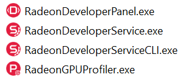
Start RadeonGPUProfiler.exe (this is the tool used to view profile data).
How to load a profile¶
There are a few ways to load a profile into RGP.
- Use the “File/Open profile” pull down menu, or the “File/Recent profile” pull down menu item.
{kind=link}
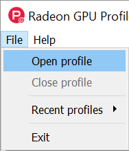
{kind=link}
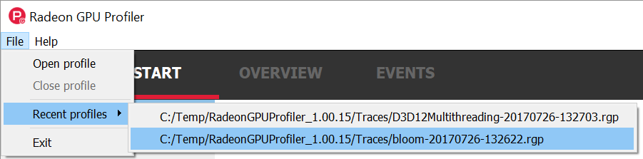
- Go to the “Welcome” view and click on the “Open a Radeon GPU Profile…”
- Go to the “Welcome” view and click on a profile that you have previously loaded in the Recent list.
{kind=link}
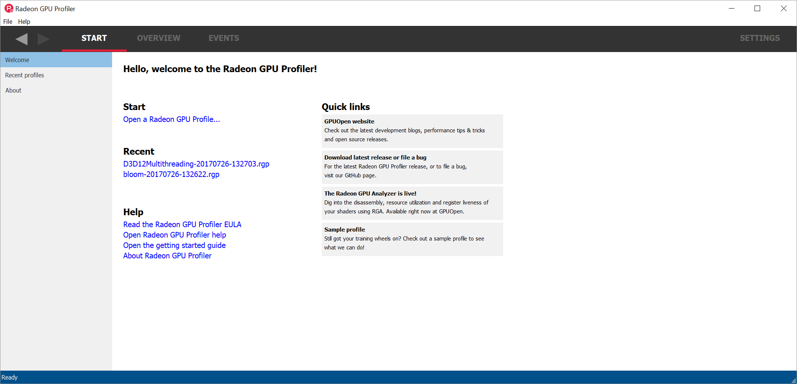
- Go to the Recent profiles view to see a full list of all your recent profiles.
- Load a profile into a new instance of the Radeon GPU Profiler from the Radeon Developer Panel. Select a profile in the list and click on “Open profile”.
{kind=link}
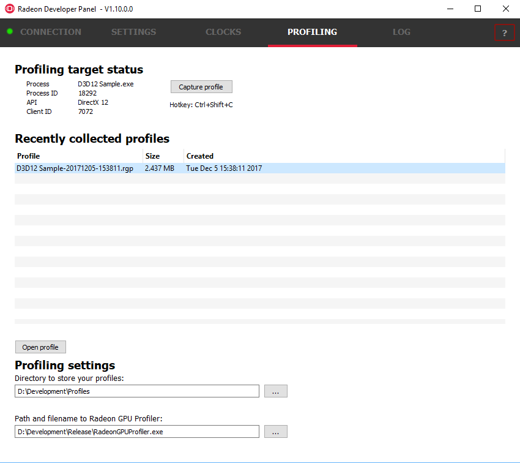
- Drag and drop a profile onto the Radeon GPU Profiler executable, or, onto an already open RGP instance.
The Radeon GPU Profiler user interface¶
There are four main menus in the Radeon GPU Profiler and each has a number of sub-windows. The two main UIs that deal with the analysis of the profile data are within the Overview and Events sections.
- Start
- Welcome - Shows links to help documentation, and a list of recently opened profiles, and a sample profile.
- Recent profiles - Displays a list of the recently opened profiles.
- About - Shows build information about RGP and useful links.
- Overview
- Frame Summary - Contains summaries of structure of the graphics frame.
- Barriers - Details of the barrier usage in the profiled frame.
- Most expensive events - List of the most expensive events.
- Context rolls - Details of the hardware context register usage.
- Device Configuration - Information about the GPU the profile was generated on.
- Events
- Wavefront occupancy - Shows detailed information about wavefront occupancy and event timings.
- Event timing - Tree view of profile events and their timing data.
- Pipeline state - Tree view of profile events and their graphics/compute pipeline state.
- Settings
- General - Adjust desired time units, state buckets, GPU boundness percentage, and wavefront view detail levels.
- Themes and colors - Customize colors for graphics API and hardware data.
- Keyboard shortcuts - Shortcuts for navigating the wavefront occupancy UI.
Settings¶
General¶
Units: This tells profiler whether to work in clocks, nanoseconds, microseconds, or milliseconds. Refer to the keyboard binding in the secion below to quickly toggle between these time units.
State buckets: Specify how the profiler should generate its own state buckets. This can be based off a combination of shader base address, depth buffer address, and render target address.
Sync event time windows: Keep the Wavefront Occupancy and Event Timing panes in sync while browsing through different time ranges.
Processor boundness: Specific to the Frame Summary, this value will tell RGP at which point to consider an application as being GPU bound or CPU bound.
Wavefront occupancy detail: Increase the visual quality of wavefronts in the Wavefront Occupancy pane. This allows users to see a more accurate representation of GPU occupancy at the expense of some profiler performance.
Themes and colors¶
The profiler makes heavy use of coloring to display its information. This pane allows users to thoroughly customize those colors.
{kind=link}
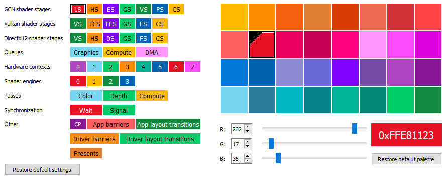
Keyboard shortcuts¶
Here users will find the Keyboard shortcuts pane:
{kind=link}
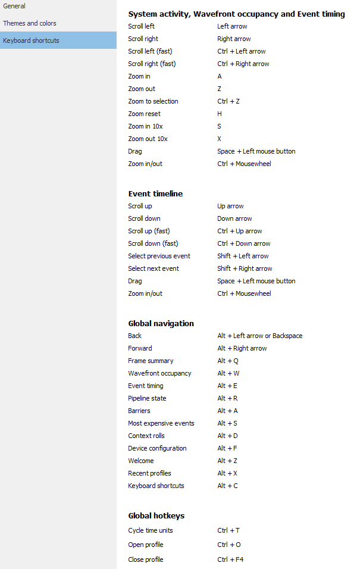
The System activity, Wavefront occupancy and Event timing shortcuts are specific to zooming and panning operations that can be performed within the Frame Summary and Events subtabs (see below):
{kind=link}
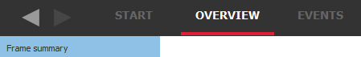
{kind=link}
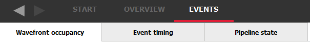
The Event timeline section refers to panning and event selection operations for the bottom graph within the Wavefront occupancy view.
The Global navigation section refers to keystrokes that aid user navigation, and are always detected regardless of which pane is visible.
The Global hotkeys section refers to any hotkeys available anywhere in the product. Currently there is just one setting that allows you to cycle through the different time units from any pane, rather than having to go to the settings. This allows you to view a timeline in clock cycles, milliseconds, microseconds or nanoseconds very quickly.
We encourage all users to adopt these keystrokes while using RGP.
{kind=link}
Overview Windows¶
Frame summary¶
This window describes the structure of a profile from a number of different perspectives.
{kind=link}
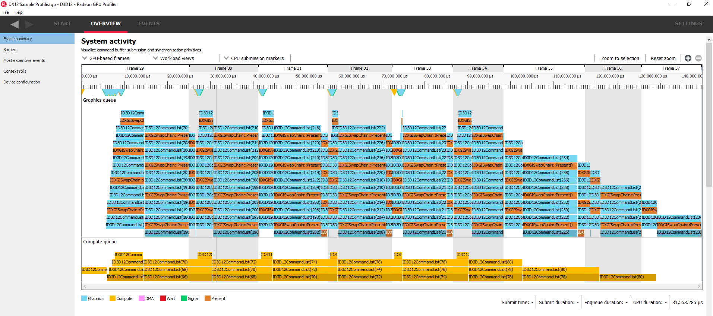
The System activity section displays a system-level view of sync operations and when command buffers were submitted to the GPU. Speaking in general terms, all profiles contain two types of data: command buffer timing data and SQTT timing data. This pane displays the former, and the rest of RGP displays the latter.
Along the top, we find a series of controls:
GPU and CPU based frames: Controls how to display frame boundaries, which are also bracketed by black markers. The difference in time between both modes can help to visualize latency between workload submission and execution. The driver provides each command buffer with a frame number, a CPU submit timestamp, a GPU start timestamp, and a GPU end timestamp.
- GPU-based frames: Interprets frame boundaries to begin when a present finished on the GPU.
- CPU-based frames: Interprets frame boundaries to begin when a present was submitted on the CPU.
Workload views: Provide twelve different ways to view the same data:
- Command buffers: Shows a list of all command buffers in a submission. Disabling this will condense all command buffers into a single submission block which also specifies the number of contained command buffers.
- Sync objects: Toggles whether to display signals and waits.
- Sequential: An alternate view which shows data linearly as opposed to stacked. The dark right-most portion of command buffers and submits indicates execution time on the GPU.
- GPU only: A flat view of the data which represents solely GPU work. This helps visualize parallelism among all GPU queues.
CPU submission markers: Draw vertical lines to help visualize when the CPU issued certain types of workloads to the GPU.
Zoom controls: Consistent with the rest of the tool, these allow users to drill down into points of interest.
In the middle, we find the actual view. Each queue (Graphics, Compute, Copy) gets its own section. The alternating grey and white backgrounds indicate frame boundaries. The blue region indicates which command buffers were profiled with SQTT data, for more detailed event analysis in other sections of the tool. Note that command buffers are visualized using two shades of the same color. The lighter shade represents time spent prior to reaching the GPU, and the darker shade represents actual execution.
Please note that the view is interactive, making it possible for users to select and highlight command buffers, sync objects, and submission points.
Starting with RGP 1.2 it is possible to correlate between command buffer timing data and SQTT data. Users may do this by right-clicking on a command buffer within the “Detailed GPU events” region, which will bring up an event finder context menu. This menu shows three options for finding the first event within the selected command buffer. Selecting an option will trigger the profiler to navigate to the appropriate pane and focus on the first event.
Along the bottom, we find information about user selections:
Submit time: Specifies when work was issued by the CPU
Submit duration: Specifies the full duration of the submit
Enqueue duration: Specifies how long the work was queued before beginning on the GPU
GPU duration: Specifies how long the GPU took to execute it.
Below the queue timings view we find the following summary:
{kind=link}
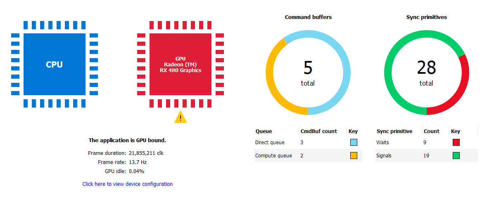
This shows an interpretation of queue timings data to determine which processor is the bottleneck. By default, if the GPU is idle more than 5% of the time then the profile is considered to be CPU-bound. This percentage may be adjusted in RGP settings.
Please note that the values displayed under Frame duration and Frame rate are sourced from SQTT data. In other words, they are based on duration and shader clock frequency used in other RGP panes such as Wavefront occupancy.
The Command buffers pie chart shows the number of command buffers in the frame broken down by the Direct and Compute queues. Compute submissions are colored in red and graphics submissions are colored in light blue. The Sync Primitives section counts how many unique signal and wait objects were detected throughout the profile.
{kind=link}
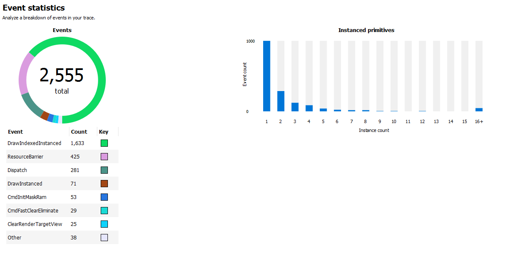
The Event statistics pie chart and table show the event counts colored by type. In the above example there are 281 Dispatch and 1,633 DrawIndexedInstanced events. The Instanced primitives histogram shows the number of events that drew N (1 to 16+) instances. In the example above we see that most events drew just a single instance, whereas a lesser number of events drew 2-9 and 16 instances.
{kind=link}
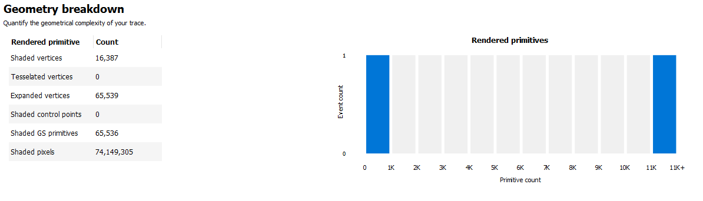
Geometry breakdown gives a summary of the vertices, shaded primitives, shaded pixels, and instanced primitives. In the above example we can see that the GS is being used to expand the number of shaded primitives. Also, looking at the Rendered Primitives histogram we can see that one draw uses between 0 and 1K primitives, and the other draw call uses 11k or more primitives. This makes sense given that the profile is from the D3D12nBodyGravity SDK sample.
Barriers¶
The developer is now responsible for the use of barriers in their application to control when resources are ready for use in specific parts of the frame. Poor usage of barriers can lead to poor performance but the effects on the frame are not easily visible to the developer - until now. The Barriers UI gives the developer a list of barriers in use on the graphics queue, including the additional barriers inserted by the driver.
Note that in older profiles or if the barrier origin isn’t known, all barriers and layout transitions will be shown as ‘N/A’.
{kind=link}
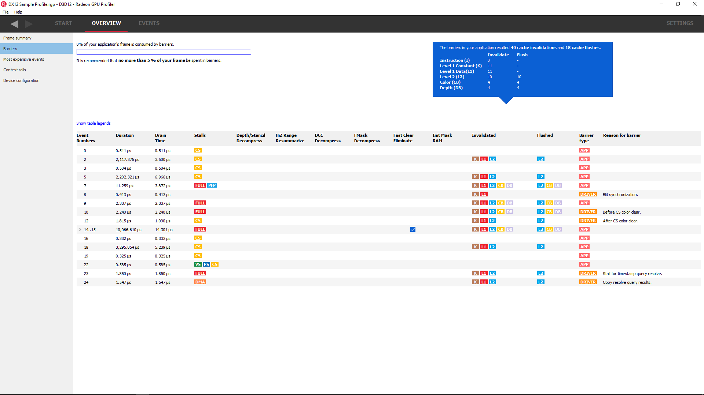
The table gives a summary at the top left of the UI that quickly lets the developer know if there is an issue with barrier usage in the frame. In the case above the barrier usage is taking up 0% of the frame - below the recommended max value of 5%.
The table shows the following information:
Event Numbers - ID of the barrier - selecting and event in this UI will select it on the other Events windows
Duration - Lifetime of the barrier
Drain time - This is the amount of time the barrier spends waiting for the pipeline to drain, or work to finish. Once the pipeline is empty, new wavefronts can be dispatched
Stalls - The type of stalls associated with the barrier - where in the graphics pipe we need the work to drain from
Layout transitions - A blue check box indicates if the barrier is associated with a layout transition. There are 6 columns indicating the type of layout transition
Invalidated - A list of invalidated caches
Flushed - A list of flushed caches
Barrier type - Whether the barrier originated from the application or from the driver (or ‘N/A’ if unknown)
Reason for barrier - In the case of driver-inserted barriers, a brief description of why this barrier was inserted
NOTE: Selecting a barrier in this list will select the same event in the other Event windows.
The user can also right-click on any of the rows and navigate to Wavefront occupancy, Event timing or Pipeline state panes and view the event represented by the selected row in these panes, as well as in the side panels.
In addition, the user can also see the parent command buffer in the Overview pane. If selected, the Overview pane will be opened and the parent command buffer will be selected.
Below is a screenshot of what the right-click context menu looks like:
{kind=link}
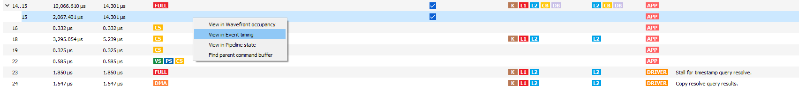
Most expensive events¶
The Most Expensive events UI allows the developer to quickly locate the most expensive events by duration. At the top of the window is a histogram of the event durations. The least expensive events are to the left of the graph and the most expensive to the right. A blue summary bar with an arrow points to the bucket that is the most costly by time. The events in this bucket are most in need of optimization. The double slider below the chart can be used to select different regions of the histogram. The summary and table below will update as the double slider’s position is changed. In the example below we can see that the most expensive 5% of events take 44% of the frame time.
Below the histogram is a summary of the frame. In this case, the top 10% of events take 70% of the frame time, with 56% of the selected region consisting of graphics events and 44% async compute events.
The table below the summary shows a list of the events in the selected region with the most expensive at the top of the list.
{kind=link}
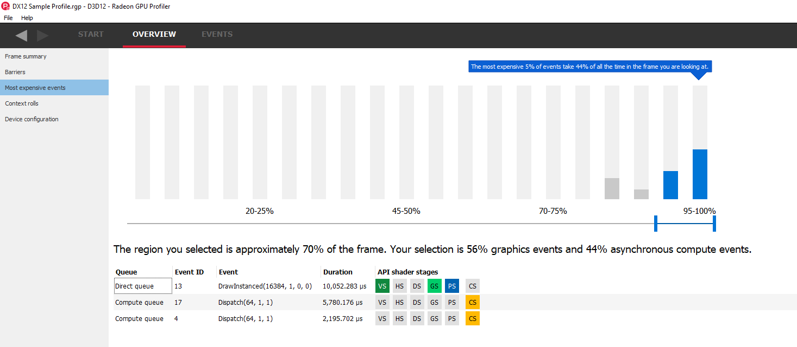
NOTE: Selecting an event in this list will select the same event in the other Event windows.
The user can also right-click on any of the rows and navigate to Wavefront occupancy, Event timing or Pipeline state panes and view the event represented by the selected row in these panes, as well as in the side panels. Below is a screenshot of what the right-click context menu looks like.
{kind=link}
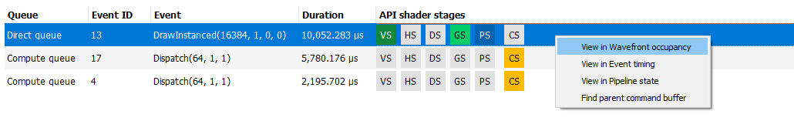
Context rolls¶
Context rolling is a hardware feature specific to the GCN graphics architecture and needs to be taken into consideration when optimizing draws for AMD GPUs. Each draw requires a set of hardware context registers that describe the rendering state for that specific draw. When a new draw that requires a different render state enters the pipeline, an additional set of context registers is required. The process of assigning a set of context registers is called context rolling. A set of context registers follows the draw through the graphics pipeline until it is completed. On completion of the draw, that associated set of registers is free to be used by the next incoming draw.
On GCN hardware there are 8 logical banks of context registers, of which only seven are available for draws. The worst-case scenario is that 8 subsequent draws each require a unique set of context register. In this scenario the last draw has to wait for the first draw to finish before it can use the context registers. This causes a stall that can be measured and visualized by RGP.
{kind=link}
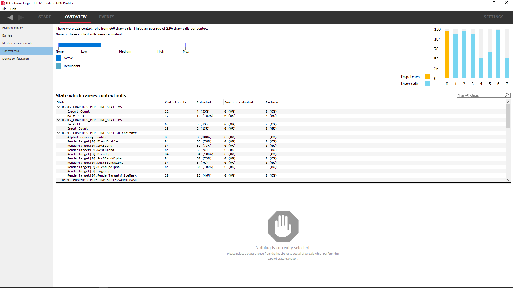
In the example above, a DirectX 12 application, we can see that there are 223 context rolls in the frame and none of them are redundant. The Radeon GPU Profiler compares the context register values across state changes to calculate if the context roll was redundant. Redundant context rolls can be caused by the application and the driver. Ineffective draw batching can be a cause on the application’s end.
The chart to the right shows the number of times each context was rolled. The fact that contexts 2,3,4 and 6 were used ~120 times probably indicates that stalls were generated.
The table underneath shows the state from the API’s perspective, and which parts of the state were involved in context rolls. The first column indicates how many context rolls it was involved in, and the second column indicates how many of these changes were redundant (the state was written with the exact same value). The next column indicates the number of context rolls that were completely redundant (the whole context was redundant, not just the state). The final column shows the number of context rolls of this state where this was the only thing that changed in the event.
{kind=link}
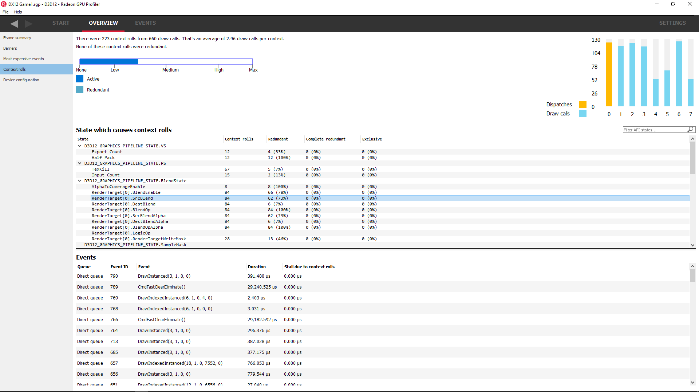
Selecting an API-state shows all the draw calls in the second table, called the Events table, that rolled context due to this state changing, with or without other states changing too.
The search box in the top-right corner of the state table works similarly to the other search boxes in the application and filters API-state tree in real-time as you type.
NOTE: Selecting an event in this list will select the same event in the other Event windows.
The user can also right-click on any of the rows and navigate to Wavefront occupancy, Event timing or Pipeline state panes and view the event represented by the selected row in these panes, as well as in the side panels. Below is a screenshot of what the right-click context menu looks like.
{kind=link}
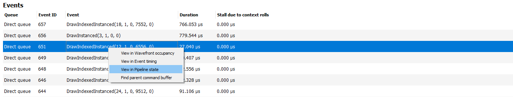
NOTE: When selecting events on the event panes and using the right-click context menu to jump between panes, the option to “View in context rolls” will only be available if the selected event is currently present in the events table on the context rolls pane.
Device configuration¶
This UI reports the GPU configuration of the system that was used to generate the profile. The Radeon Developer Panel can retrieve profiles from remote systems so the GPU details can be different from the system that you are using to view the data. The clock frequencies refer to the clock frequency running when the capture was taken. The number in parentheses represents the peak clock frequency the graphics hardware can run at.
{kind=link}
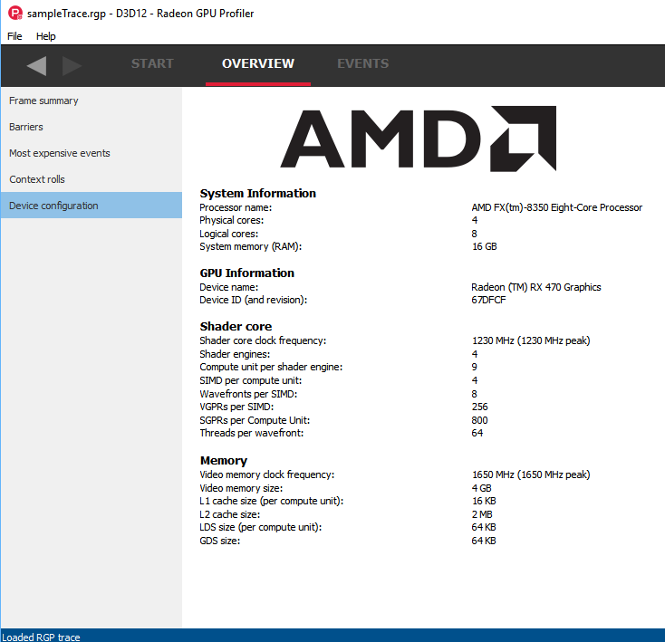
Events Windows¶
This section of RGP is where users will perform most analysis at the event level. An RGP event is simply an API call within a command buffer that was issued by either the application or the driver.
Wavefront occupancy¶
This section presents users with an interactive timeline that shows GPU utilization and all events in the profile.
{kind=link}
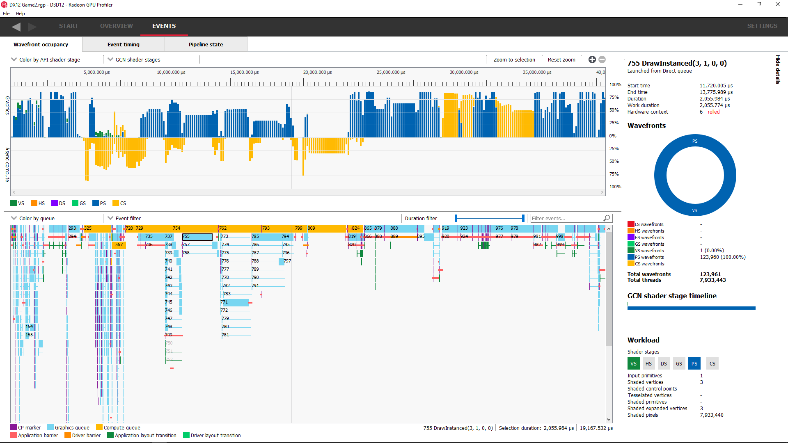
There are three components, the Wavefront timeline view, the Events timeline view, and the Details panel.
Wavefront timeline view
This section shows how many wavefronts were in flight. All wavefronts are grouped into buckets which are represented by vertical bars. The top half shows wavefronts on the graphics queue, and the bottom half shows wavefronts on the async compute queue.
{kind=link}
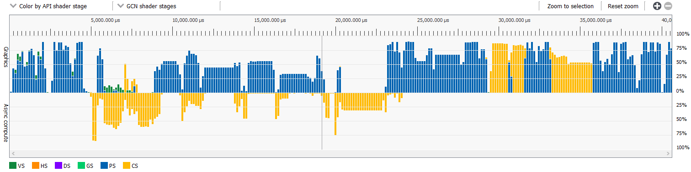
Users may examine regions by selecting ranges within the graph and using the zoom buttons on the top right. Users may also hover over this view and use mouse wheel to zoom and center in on a particular spot. A region of wavefronts can be selected by using either mouse button to drag over the desired region as shown below.
{kind=link}
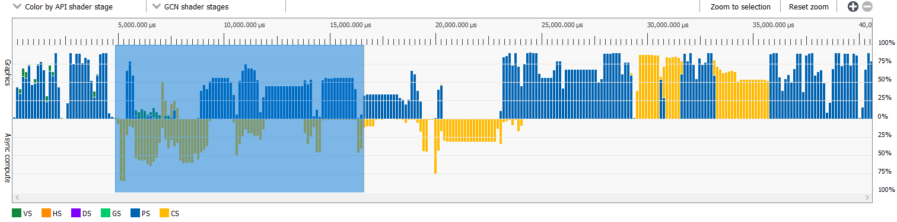
You can zoom into the region by selecting Ctrl + Z, or by clicking on “Zoom to selection” (result shown below).
{kind=link}
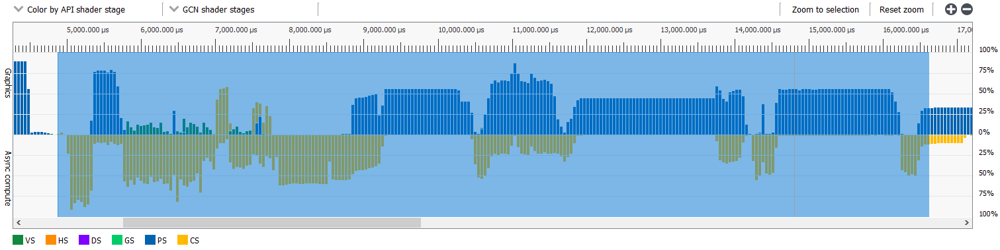
You can also drag the graph if you are zoomed in. Hold down the space bar first, then hold the mouse button down. The graph will now move with the mouse.
Users may use the combo-box on the top left to visualize wavefronts in different ways:
- Color by API stage. Default, and shows which wavefronts correspond to which Vulkan/DX12 pipeline stage.
- Color by GCN stage. Shows which wavefronts correspond to which GCN pipeline stage.
- Color by hardware context. Shows which GCN context (0-7) the wavefronts ran on. This can be useful to visualize the amount of context rolls that occurred.
- Color by shader engine. Shows which shader engine the wavefronts ran on.
- Color by event. Shows which wavefronts correspond to which event of the profile. Each event is assigned a unique color.
- Color by pass. Groups wavefronts into different passes depending on which render target or attachment type (color, depth-only, compute). These three types are assigned a base color, and each pass within each type is assigned a different shade of the base color. This can be useful to visualize when the application attempted to render different portions of a scene.
Additionally, there are filters along the top intended to help visualize the occupancy of only certain GCN pipeline stages. Lastly, there are colored legends on the bottom which serve as color reminders. Note these colors can be customized within Settings.
Events timeline view
This section shows all events in your profile. This includes both application-issued and driver-issued submissions. Each event can consist of one or more active shader stages and these are shown with rectangular blocks. The longer the block, the longer the shader took to execute. If there is more than 1 shader active, then each shader stage is connected with a thin line to indicate they belong to the same event. This view just shows actual shader work; it doesn’t show when the event was submitted.
{kind=link}
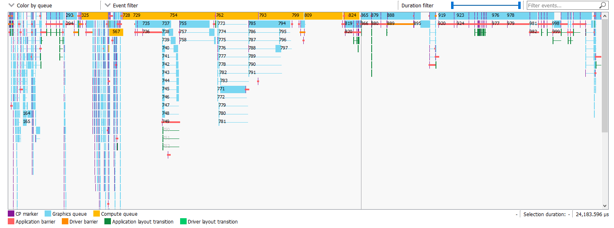
Users may single-click on individual events to see detailed information on the details pane described below. Zooming into this graph is done by selecting the desired region in the wavefront graph above. Additionally, zooming in on a single event can be done by selecting the event and clicking on ‘Zoom to selection’.
Users may use the combo-box on the top left to visualize events in different ways:
- Color by queue. Default, and shows which events were submitted to graphics or async compute queues. In addition, the CP marker is shown in a unique color, as well as the barriers and layout transitions so they can be easily distinguished. Note that barrier and layout transitions originating from the driver are colored differently to those from the application, and this is shown in the legend below the timeline view.
- Color by hardware context. Shows which events ran on which context. This can be useful to visualize the amount of context rolls that occurred.
- Color by event. Will show each event in a unique color.
- Color by pass. Groups events into different passes depending on which render target or attachment type (color, depth-only, compute). These three types are assigned a base color, and each pass within each type is assigned a different shade of the base color. This can be useful to visualize when the application attempted render different portions of a scene.
- Color by command buffer. Shows each event in a color associated with its command buffer, so making it easy to see events are in the same command buffer.
- Color by user events. Will colorize each event depending on which user event it is surrounded by.
Additionally, there are also filters to help visualize only certain types of events. For example, users can select to see draws, dispatches, barriers, clears, copies and resolves. There is also an option to switch the CP marker on or off. Switching the CP marker off will just show the active shader blocks. The event duration percentile filter allows users to only see events whose durations fall within a certain percentile. For example, selecting the rightmost-region of the slider will highlight the most expensive events. One will also find a textbox to filter out by event name.
The same zooming and dragging that is available on the wavefront timeline view is also available here.
Lastly, there are colored legends on the bottom which serve as color reminders. Note these colors can be customized within Settings.
Details pane
Pressing Show Details on the top right will open a side panel with more in-depth information. The contents of this panel will change, depending on what the user last selected. If a single event was selected in the Events timeline the details panel will look like below:
{kind=link}
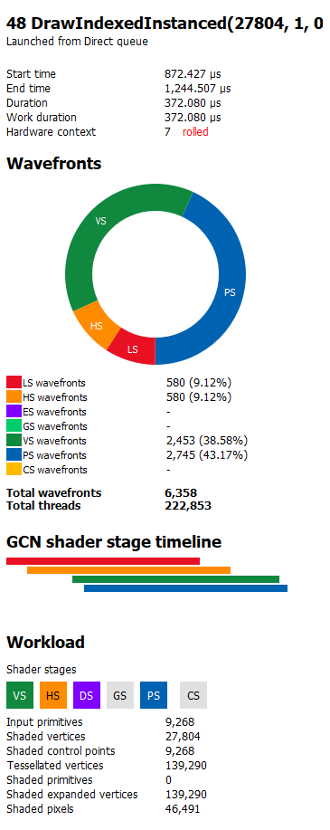
The Details panel for a single event contains the following data:
- The event’s API call name
- The queue it was launched on
- User event hierarchy (if present)
- Start, End, and Duration timings
- Hardware context and if it was rolled
- Wavefront pie chart showing the distribution of wavefront counts per stage
- List of GCN hardware stages and wavefront counts
- Total wavefront count
- Total threads
- GCN shader timeline graphic showing active stages and duration
- Block diagram of active pipeline stages
- Primitive, vertex, control point, and pixel counts
The ‘Duration’ shows the time from the start of the first shader to the end of the last shader, including any space between shaders where no actual work is done (denoted by a line connecting the shader ‘blocks’). The ‘Work duration’ only shows the time when the shaders are actually doing work. This is the sum of all the shader blocks, ignoring the connecting lines where no work is being done. If there is overlap between shaders, the overlap time is only accounted for once. If all shaders are overlapping, then the duration will be the same as the work duration.
If the user selects a range of wavefronts in the wavefront timeline the details panel contains a summary of all the wavefronts in the selected region as shown below:
{kind=link}
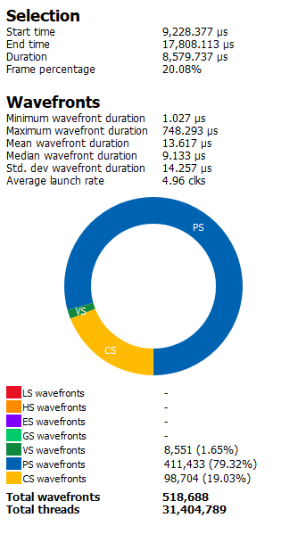
If the user selects a barrier, the details panel will show information relating to the barrier, such as the barrier flags and any layout transitions associated with this barrier. It will also show the barrier type (whether it came from the application or the driver). Note that the barrier type is dependent on whether the video driver has support for this feature. If not, then it will be indicated as ‘N/A’. An example of a user-inserted barrier is shown below:
{kind=link}
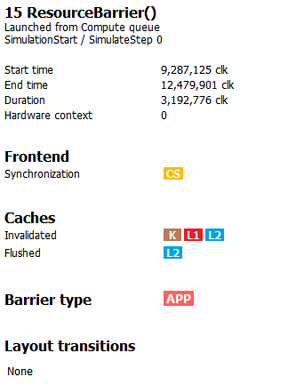
If the driver needed to insert a barrier, a detailed reason why this barrier was inserted is also displayed, as shown below:
{kind=link}
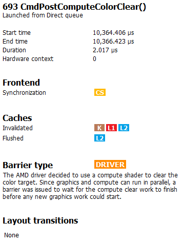
If the user selects a layout transition, the details panel will show information relating to the layout transition as shown below:
{kind=link}
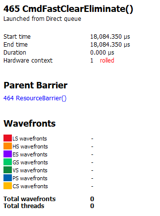
The user can also right-click on any of the events in the Events timeline view and navigate to Event timing or Pipeline state panes, as well as Barriers, Most expensive events and Context rolls panes within Overview tab, and view the selected event in these panes, as well as in the side panels.
In addition, the user can zoom into an event using the “Zoom to selection” option from this context menu.
Below is a screenshot of what the right-click context menu looks like.
{kind=link}
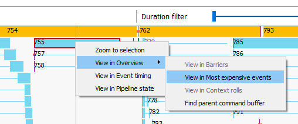
Event timing¶
The event timing window shows a list of events and their corresponding timings. The treeview in the left hand column shows each event name and its unique index, starting at 0, and are listed in sequential order. Events can be ordered into groups, and group categories are shown in bold text.
{kind=link}
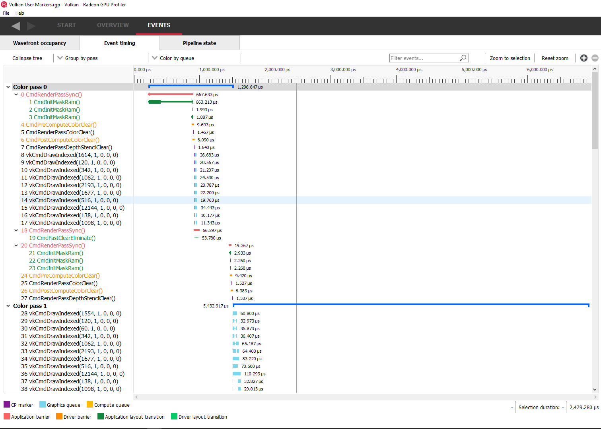
The pane to the right of the treeview shows a graphical representation of the duration for each event. The darker blue span to the right of each tree node shows the duration of all the events in that node.
In the graphic for each event (shown in light blue above) the first small block at the left is the CP marker, indicating when the event was issued. This is followed, some time later, by actual work done by the shaders. The delay between the CP marker and the start of actual work may indicate bottlenecks in the application. One of the shaders may be waiting for a resource which is currently being used by another wave in flight and cannot start until it obtains that resource. The time when the first shader started work and the last shader finished work is the number indicated in this column. Each shader stage is represented by a rectangular block. The longer the block, the longer the shader took to execute. Shaders are linked by a solid line to show that they are connected in the pipeline. For groups, a dark line spans all events within the group, showing the time taken for that group to complete work.
Control on this pane is similar to the Wavefront occupancy pane. Zooming can be done by clicking on the zoom buttons or selecting a region with the mouse and clicking on ‘Zoom to selection’. ‘Zoom to selection’ will also zoom in on an event if the line for that event is selected in the table. If zoomed in, dragging is also possible using the same method described previously.
Grouping modes
The events can be grouped together. Normally these groups don’t affect the event ordering but sometimes can (sort by state bucket).
- Group by pass will show events depending on the render target or attachment type (color, depth-only, compute).
- Group by hardware context will group events by their hardware context, making it easy to see which events caused the context to change.
- Group by state bucket (unsorted) will order the events by state bucket but won’t sort the state buckets by duration. Theoretically, all events in a state bucket use the same shaders. The duration of a state bucket is represented by the dark blue line corresponding to the state bucket group text.
- Group by state bucket (serialized) will take all the event timings within the group and sum the total time that the shaders were busy, ignoring all empty space between events. This has the effect of serializing the shader work and doesn’t take into account that some shaders will be executing in parallel. This is used to highlight when you have a lot of small shaders whose cumulative work can be extensive. As an example, if you have 2 shaders which start at the same time and one takes 2000 clks and another takes 10000 clks, the total duration would be 12000 clks.
- Group by state bucket (overlapped) takes into account the parallelism of the shader execution so will highlight shaders which take a long time to execute. Using the same example above, since both shaders start together, the total duration in this case would be 10000 clks.
- Group by command buffer will group events depending on which command buffer they are on.
- Group by user events will group the events depending on which user event(s) they are surrounded by.
The default grouping mode is by user event if user events are present in the profile. Otherwise the default will be to group by pass.
Note that grouping by hardware context or command buffer will group events by queue first. Grouping by pass or user event will chronologically group events irrespective of which queue they originated from. Grouping by state bucket just shows events in the graphics queue. Grouping by hardware context is shown below:
{kind=link}
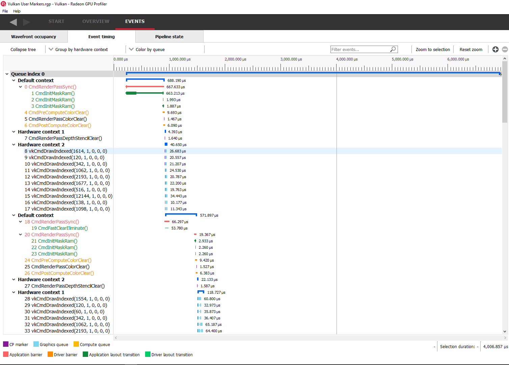
Color modes
The events can be rendered using different color schemes in the same manor as in the Wavefront occupancy view.
The user can also right-click on any of the events and navigate to Wavefront occupancy or Pipeline state panes, as well as Barriers, Most expensive events and Context rolls panes within Overview tab, and view the selected event in these panes, as well as in the side panels.
In addition, the user can zoom into an event using the “Zoom to selection” option from this context menu.
Below is a screenshot of what the right-click context menu looks like.
{kind=link}
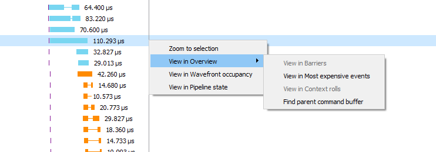
Wavefront occupancy and event timing window synchronization
Normally, adjusting the time window in one of these views (by zooming in and scrolling) doesn’t affect the other window. This can be useful in some cases when tracking more than one item. However, it is sometimes useful to lock both the event timing and wavefront occupancy views to the same visible time window. There is an option to control this in the ‘General’ tab of the Settings section called Sync event time windows. With this enabled, any zooming and scrolling will in one window will be reflected in the other. If adjustments are made in the wavefront occupancy view, the vertical scroll bar in the event timing view will be automatically adjusted so that there are always events shown on screen if an event isn’t manually selected.
The anatomy of an event¶
Two examples of typical draw call events are shown below:
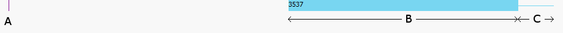
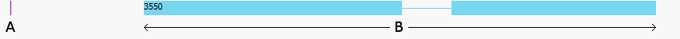
A shows the CP marker. This is the point the command processor in the GPU issues work to be done. It is then queued up until the GPU can process the workload.
B shows the work being done by the various shader stages. The gap between the CP marker and the start of B indicates that the GPU didn’t start on the workload straight away and was busy doing other things, for example, previous draw calls.
C shows any fixed-function work that needs doing after the shaders have finished executing. This occurs when a draw call is doing depth-only rendering. The fixed function work shown is the primitive assembly and scan conversion of the vertices shaded by the vertex shader.
Starting with RGP 1.2 users may also obtain information about an event’s parent command buffer. When right-clicking on an event, users are presented with a context menu containing an option to find its parent command buffer. This will trigger RGP to navigate to the Frame Summary and focus on said parent command buffer. Once here, users can obtain valuable system-level insight about the surrounding context for the event in question.
Pipeline state¶
The pipeline state window shows the render state information for individual events by stage. In the example below the event is a DirectX12 DrawInstanced call using a VS, GS, and a PS. Active stages are rendered in black and can be selected, gray stages are inactive on this draw and cannot be selected.
The user has selected the PS stage for viewing and it is rendered in blue to indicate this. Below the pipeline stage graphic is a summary of the wavefront activity for this draw and the per-wavefront register resources used by the shader.
The register values indicate the number of registers that the shader is using. The value in parentheses is the number of registers that have been allocated for the shader.
From this information and knowledge about the GCN architecture we can calculate the theoretical maximum wavefront occupancy for the pixel shader. In this case the maximum of 8 wavefronts per SIMD are theoretically possible, but may be limited by other factors.
{kind=link}
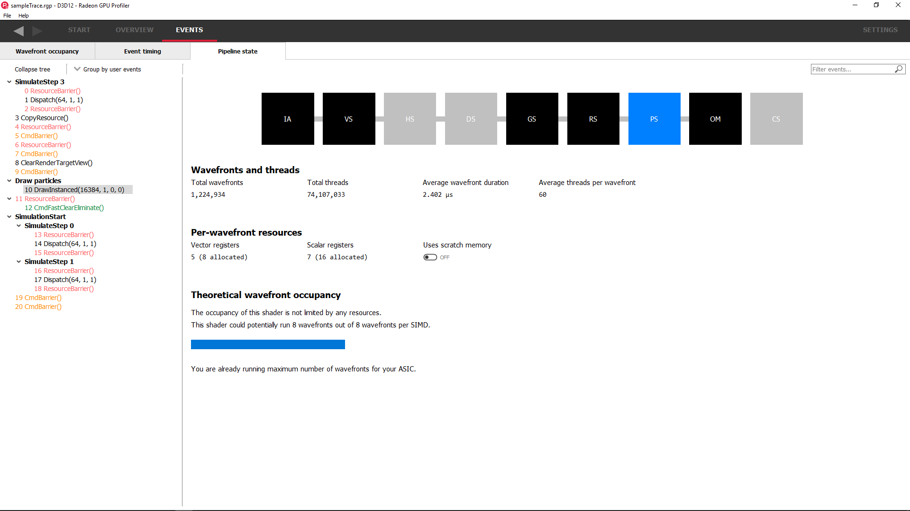
Grouping modes
The grouping modes are the same is in the Event timing pane.
The user can also right-click on any of the events and navigate to Wavefront occupancy or Event timing panes, as well as Barriers, Most expensive events and Context rolls panes within Overview tab, and view the selected event in these panes, as well as in the side panels. Below is a screenshot of what the right-click context menu looks like.
{kind=link}
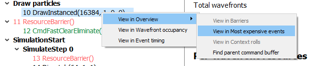
Note: The Output Merger stage of a DirectX 12 application may report the LogicOp as D3D12_LOGIC_OP_COPY, even though it is set in an application as D3D12_LOGIC_OP_NOOP. These 2 operations are semantically the same if blending is enabled. A no-op indicates that no transform of the data is to be performed so the output is the same as the source.
User Debug Markers¶
User markers can help application developers to correlate the data seen in RGP with their application behavior.
DirectX12 User Markers¶
For DirectX12, there are two recommended ways to instrument your application with user markers that can be viewed within RGP:
- using Microsoft® PIX3 event instrumentation, or
- using the debug marker support in AMD GPU Services (AGS) Library.
Using PIX3 event instrumentation for DirectX12 user debug markers¶
If your application has been instrumented with PIX3 user markers, then to view the markers within RGP is a simple matter of recompiling the source code of the application with a slightly modified PIX header file to include AMD header files.
The currently supported PIX3 event instrumentation for RGP are:
void PIXBeginEvent(ID3D12GraphicsCommandList* commandList, ...)
void PIXEndEvent(ID3D12GraphicsCommandList* commandList)
void PIXSetMarker(ID3D12GraphicsCommandList* commandList, ...)
The steps to update the PIX header file are:
1. Copy the entire samples\AMDDxExt folder provided in the RGP package to the location where the PIX header
files (pix3.h, pix3_win.h) resides (typically at WinPixEventRuntime.[x.x]\Include\WinPixEventRuntime).
2. Update the content of pix3.h file to replace the inclusion of pix3_win.h with AMDDxExt\AmdPix3.h file.
For example:
#if defined(XBOX) || defined(_XBOX_ONE) || defined(_DURANGO)
#include "pix3_xbox.h"
#else
//#include "pix3_win.h"
#include "AMDDxExt\AmdPix3.h"
#endif
3. Recompile the application. Note that the RGP user markers are only enabled when the corresponding PIX event instrumentation is also enabled with one of the preprocessor symbols: USE_PIX, DBG, _DEBUG, PROFILE, or PROFILE_BUILD.
The PIX3 event instrumentation within the application continues to be usable for Microsoft PIX tool without additional side effects or overhead.
To find a more complete description of how to use the PIX event instrumentation, refer to https://blogs.msdn.microsoft.com/pix/winpixeventruntime/.
See many examples of using PIX event instrumentation at https://github.com/Microsoft/DirectX-Graphics-Samples.
Using AGS for DirectX12 user debug markers¶
The AMD GPU Services (AGS) library provides software developers with the ability to query AMD GPU software and hardware state information that is not normally available through standard operating systems or graphic APIs. AGS includes support for querying graphics driver version info, GPU performance, Crossfire™ (AMD’s multi-GPU rendering technology) configuration info, and Eyefinity (AMD’s multi-display rendering technology) configuration info. AGS also exposes the explicit Crossfire API extension, GCN shader extensions, and additional extensions supported in the AMD drivers for DirectX® 11 and DirectX 12. One of the latest features in AGS is the support for DirectX 12 user debug markers.
User markers can be inserted into your application using AGS function calls. The inserted user markers can then be viewed within RGP. The main steps to obtaining user markers are described below.
Articles and blogs about AGS can be found here: https://gpuopen.com/gaming-product/amd-gpu-services-ags-library/
Additional API documentation for AGS can be found at: https://gpuopen-librariesandsdks.github.io/ags/
Download AGS¶
Download the AGS library from: https://github.com/GPUOpen-LibrariesAndSDKs/AGS_SDK/
The library consists of pre-built Windows libraries, DLLs, sample and documentation. You will need to use files in the following two dirs.
- Headers: AGS_SDK-master\ags_lib\inc
- Libraries: AGS_SDK-master\ags_lib\lib
Integrate AGS header, libs, and DLL into your project¶
AGS requires one header (amd\ags.h) to be included in your source code.
Add the location of the AGS header to the Visual Studio project settings
and include the header in the relevant code files.
#include “amd_ags.h”
Link your exe against correct AGS library for your project (32 or 64bit, MD, MT, DLL, or UWP DLL).
| Library Name | AGS Runtime DLL required | Library Type | |
|---|---|---|---|
| 64 Bit | amd_ags_uwp_x64.lib | amd_ags_uwp_x64.dll | UWP |
| amd_ags_x64.lib | amd_ags_x64.dll | DLL | |
| amd_ags_x64_2015_MD.lib | NA | VS2015 Lib (multithreaded dll runtime library) | |
| amd_ags_x64_2015_MT.lib | NA | VS2015 Lib (multithreaded static runtime library) | |
| amd_ags_x64_2017_MD.lib | NA | VS2017 Lib (multithreaded dll runtime library) | |
| amd_ags_x64_2017_MT.lib | NA | VS2017 Multithreaded static | |
| 32 Bit | amd_ags_uwp_x86.lib | amd_ags_uwp_x86.dll | UWP |
| amd_ags_x86.lib | amd_ags_x86.dll | DLL | |
| amd_ags_x86_2015_MD.lib | NA | VS2015 Lib (multithreaded dll runtime library) | |
| amd_ags_x86_2015_MT.lib | NA | VS2015 Lib (multithreaded static runtime library) | |
| amd_ags_x86_2017_MD.lib | NA | VS2017 Lib (multithreaded dll runtime library) | |
| amd_ags_x86_2017_MT.lib | NA | VS2017 Lib (multithreaded static runtime library) |
Initialize AGS¶
When you have your project building the first thing to do is to initialize the AGS context.
// Specify if memory allocation callbacks are required, and the type of crossfire support
AGSConfiguration config = {};
// Initialize AGS
AGSReturnCode agsInitReturn = agsInit(&m_AGSContext, &config, &m_AmdgpuInfo);
// Check to see if AGS was started
if (agsInitReturn != AGS_SUCCESS)
{
printf("\\nError: AGS Library was NOT initialized - Return Code %d\\n", agsInitReturn);
}
Initialize the DirectX12 Extension¶
Once the AGS extension has been successfully created we need to create the DirectX12 extension as follows:
// Initialize the DX12 extension on the device
unsigned int flags = 0;
AGSReturnCode dxInitReturn = agsDriverExtensionsDX12_Init(m_AGSContext, m_device.Get(), &flags);
// Check to see if the DX12 extension was created
if (agsInitReturn != AGS_SUCCESS)
{
printf("AGS DX12 extension was NOT initialized - Return Code %d\\n",agsInitReturn);
}
else
{
printf("AGS DX12 extension was initialized.\\n");
// Check to see if user markers are supported in the current driver
if (flags & AGS_DX12_EXTENSION_USER_MARKERS)
{
printf("AGS_DX12_EXTENSION_USER_MARKERS are supported.\\n");
}
else
{
printf("AGS_DX12_EXTENSION_USER_MARKERS are NOT supported.\\n");
}
}
Please note that the above code checks if the driver is capable of supporting user markers by testing the output flags produced by the creation of the DirectX12 extension. This step may fail on older drivers.
Insert Markers in Application¶
The main functions provided by AGS for marking applications are:
agsDriverExtensionsDX12_PushMarker;
agsDriverExtensionsDX12_PopMarker;
agsDriverExtensionsDX12_SetMarker;
The below example shows how a draw call can be enclosed within a “Draw Particles” user marker, followed by inserting a marker.
// Push a marker
agsDriverExtensionsDX12_PushMarker(m_AGSContext, pCommandList, "DrawParticles");
// This draw call will be in the “Draw Particles” User Marker
pCommandList->DrawInstanced(ParticleCount, 1, 0, 0);
// Pop a marker
agsDriverExtensionsDX12_PopMarker(m_AGSContext, pCommandList);
// Insert a marker
agsDriverExtensionsDX12_SetMarker(m_AGSContext, pCommandList, "Finished Drawing Particles");
Vulkan User Markers¶
Vulkan has support for user debug markers please read the following article for details:
https://www.saschawillems.de/?page_id=2017
See code sample at:
https://github.com/SaschaWillems/Vulkan/blob/master/examples/debugmarker/debugmarker.cpp
Viewing User Markers¶
The RGP file captured for a frame of the above application contains many user markers. The user markers can be seen in the “Event timing” and “Pipeline state” views when you choose the “Group by User Marker” option as shown below.
{kind=link}
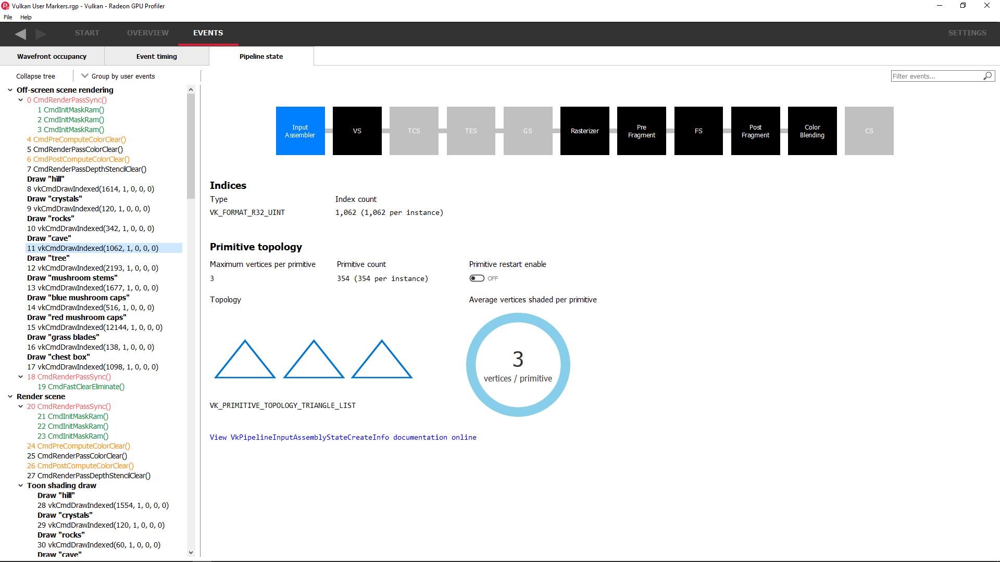
“Draw Particles” User marker with the draw calls enclosed in the User Marker
User markers can also be seen in the wavefront occupancy view when you color by User Events. Coloring by user events is also possible in the event timing view. As seen below, the draw calls enclosed by the User marker change color to purple. The events not enclosed by User Markers are shown in gray. The coloration is only affected by the Push/PopMarker combination; the SetMarker has no effect on the user event color since these markers simply mark a particular moment in time.
The full user even hierarchy is also visible on the third line of the side pane when clicking on individual events. If the event does not contain a user event hierarchy, nothing will be shown.
{kind=link}
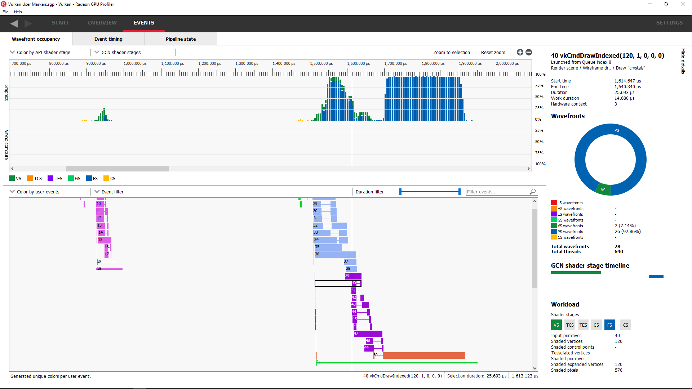
Events enclosed by user markers are colored in the wavefront occupancy view. They are also visible in the side panel.
RenderDoc & Radeon GPU Profiler interop BETA¶
Prior to version 1.2, users were expected to generate profiles by pairing Radeon Developer Panel with their native application. This new feature empowers RenderDoc to also generate profiles, plus allowing users to correlate between events across both tools.
Intended usage¶
We encourage users to use both Radeon Developer Panel and RenderDoc to obtain profiling data. The former will produce the best data for performance analysis, and the latter can be used to pinpoint which elements of a frame consume the most GPU time. Consider this interop feature as a supplement instead of a replacement for profile generation.
Obtaining a profile from RenderDoc¶
First, load RenderDoc and obtain a trace as usual. Next, create a new profile for that trace as shown below:
{kind=link}
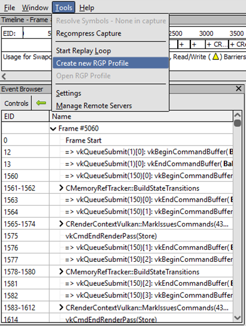
This will kick off the profiling process, which will embed a new profile into the RenderDoc trace file. If this is the first time doing this, RenderDoc will bring up a prompt to allow specification of a path to Radeon GPU Profiler. Once profiling is complete, RenderDoc will launch Radeon GPU Profiler and the new profile will be ready for analysis.
{kind=link}
{kind=link}
{kind=link}
{kind=link}
Known limitations¶
- Users may correlate GPU work (draws/dispatches) across both tools. Note that this excludes entry points such as copies, barriers, clears, and indirect draw/dispatch.
- Since the RenderDoc replayer serializes entry points, generated profiles could appear CPU bound. This can be seen as gaps in the wavefront occupancy view, which may not be present when obtaining the profile using Radeon Developer Panel.
- Creating consecutive RGP profiles from the same RenderDoc instance sometimes fails. This occurs if users obtain multiple RenderDoc captures of the same application prior to triggering a second profile. To work around this, start a fresh instance of RenderDoc with the desired trace to profile.
- In some cases profiles originating from RenderDoc contain no GPU events. To work around this, repeat the profiling process again via “Tools –> Create new RGP Profile”
- The System Activity view for a RenderDoc profile will likely mismatch that of a native profile. This is due to different command buffer submission patterns between the replayer and native application.
- Vulkan-specific: During image creation, RenderDoc sometimes forces additional usage/flags that may have not been present as per the native application. This effectively disables hardware tiling optimizations which are by default enabled during native app runtime.
- Vulkan-specific: The RenderDoc replayer does not support playback of compute work on the async compute queue. This means that the profile will show all compute work running on the graphics queue.
- Vulkan-specific: In some cases native profiles will contain color/depth clears which may not be present in the RenderDoc profile.
- DX12-specific: The RenderDoc replayer will sometimes inject CopyBufferRegion calls as part of an optimization to Map/Unmap. These will be visible as tall spikes of compute work in the wavefront occupancy view.